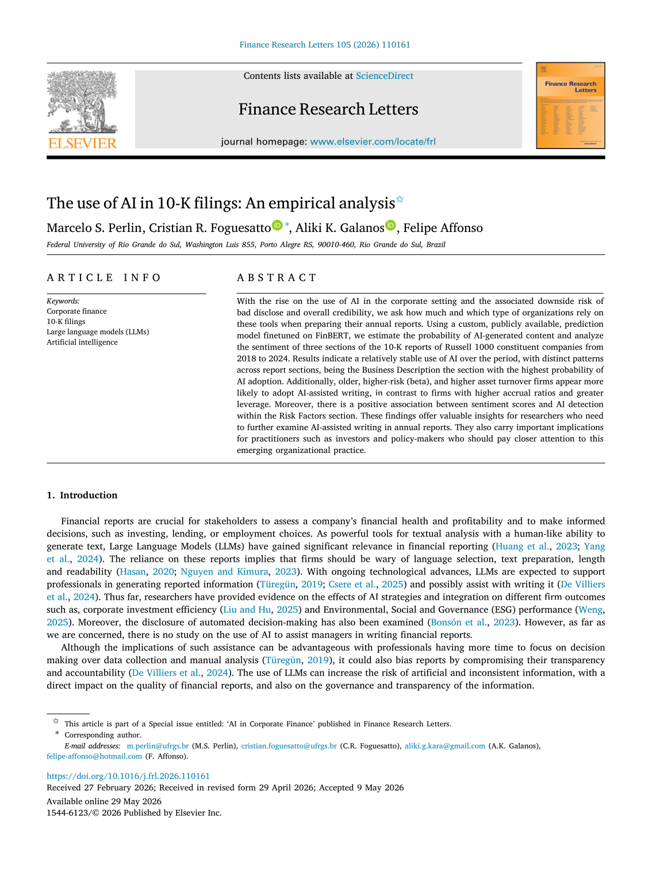
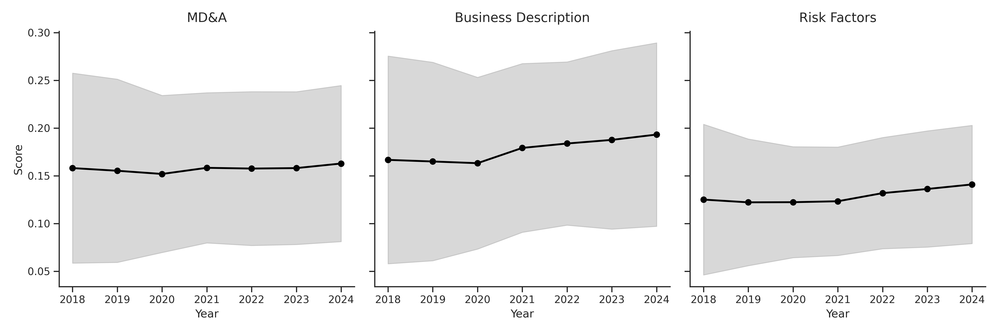
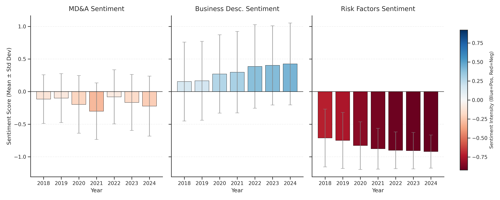

An Empirical Analysis on Russell 1000 Constituent Companies (2018-2024)
Federal University of Rio Grande do Sul (UFRGS)
2026-08-26

Generative AI and Large Language Models (LLMs) in financial narrative drafting
Key questions and target text segments in 10-K filings
Three Core Questions
Understanding the three core text segments analyzed
Data collection scope and final descriptive sample
Sources & Scope
EdgarTools (Python).EODHD.3,939 Observations
Matched company-year narrative and financial data points.
18% Data Loss
Standard attrition due to matching textual and financial filings.
570 Unique Firms
Large cross-section representing established American corporations.
Three Databases
Separate textual corpora compiled for BD, RF, and MD sections.
Fine-tuning FinBERT and aggregating segment-level probabilities
The AI Detector Model
yiyanghkust/finbert-pretrain for financial context.Text Processing & Sentiment
Summary of company variables and text indicators (2018-2024)
| Variable | N | Mean | Std Dev | Min | Max |
|---|---|---|---|---|---|
| Panel A: Company Variables | |||||
| ROE | 6,301 | 0.206 | 5.755 | -105.913 | 239.107 |
| ROA | 6,301 | 0.055 | 0.413 | -8.949 | 21.117 |
| IPO Year (Median) | 6,098 | 1997 | 15 | 1919 | 2024 |
| Age (years since IPO) | 6,098 | 23.0 | 14.8 | -6.0 | 105.0 |
| Log Size | 6,301 | 10.122 | 0.647 | 7.389 | 12.602 |
| Leverage | 6,301 | 0.693 | 3.020 | 0.000 | 238.549 |
| Beta (Market Risk) | 6,156 | 1.019 | 0.474 | -4.054 | 5.950 |
| Asset Turnover | 6,301 | 0.718 | 2.326 | -0.069 | 95.086 |
| Accrual Ratio | 6,301 | 0.024 | 0.628 | -1.897 | 44.745 |
| Panel B: Text Variables | |||||
| BD Score (AI Prob) | 5,405 | 0.178 | 0.095 | 0.009 | 0.959 |
| RF Score (AI Prob) | 5,465 | 0.129 | 0.063 | 0.011 | 0.845 |
| MD Score (AI Prob) | 5,483 | 0.158 | 0.085 | 0.007 | 0.849 |
| BD Sentiment | 6,294 | 0.301 | 0.624 | -1.000 | 1.000 |
| RF Sentiment | 6,294 | -0.843 | 0.352 | -1.000 | 1.000 |
| MD Sentiment | 6,294 | -0.170 | 0.426 | -1.000 | 1.000 |
Core Insight: Business Description (BD) has the highest average AI usage (17.8%). Text sentiments conform to purpose: Risk Factors is highly negative, while BD is positive.
Explanatory variables and predicted signs with AI usage
| Variable | Predicted Sign | Core Theoretical Rationale |
|---|---|---|
| ROE (Profitability) | + | Richer firms have resources to adopt emerging AI tools. |
| Age (Maturity) | - | Younger firms are agile and less resistant to workflow changes. |
| Log Size (Scale) | - | Larger firms face bureaucratic inertia and manual reporting layers. |
| Risk (Beta) | + | High-risk firms require extensive and polished explanations. |
| Leverage | + | Highly leveraged firms face more creditor and investor scrutiny. |
| Sentiment | + | LLMs naturally generate polished, positive, and neutral corporate drafts. |
| Asset Turnover | + | Operationally efficient firms prioritize administrative process automation. |
| Accrual Ratio | + | Accounting complexity requires detailed technical narratives. |
Generalized Linear Models (GLM) specification
Why GLM?: Probability \(p(AI)_{i,t}\) is bounded on \([0,1]\). Standard OLS is misspecified.
Specification: Quasibinomial distribution with a logit link function:
\[\mathbb{E}(AI_{i,t}) = \frac{1}{1 + e^{-z_{i,t}}}\]
\[z_{i,t} = \alpha + \theta X_{i,t}\]
Controls: Sector dummies & year fixed effects.
Sample: Limited to 2022–2024 (post-ChatGPT launch).
Temporal patterns of AI-assisted writing probability across 10-K sections

Average AI score per 10-K text segment per year
Chow structural break tests around ChatGPT public release (2022)
Structural Break Findings
Structural Break Results (Chow)
| 10-K Section | Mean Before | Mean After | F-Stat | p-value |
|---|---|---|---|---|
| Business Description | 16.85% | 18.78% | 4.501 | 10.12% |
| Risk Factors | 12.16% | 13.56% | 12.923 | 2.29% |
| Management Discussion | 15.44% | 15.86% | 3.128 | 15.17% |
Data shows statistically robust evidence of a structural upward shift in AI usage after 2022, especially in high-stakes Risk Factors.
Distribution of FinBERT sentiment scores across 10-K sections

Distribution of sentiment score per 10-K text segment
Determinants of AI-assisted writing (2022-2024)
| Variable | Business Description (BD) | Risk Factors (RF) | Management Discussion (MD) |
|---|---|---|---|
| ROE (Profitability) | -0.027 (0.019) | -0.001 (0.016) | -0.004 (0.020) |
| Age (Maturity) | 0.003 (0.001)\(^{***}\) | -0.003 (0.001)\(^{***}\) | 0.002 (0.001)\(^{*}\) |
| Log Size (Scale) | -0.077 (0.026)\(^{***}\) | 0.153 (0.021)\(^{***}\) | 0.024 (0.026) |
| Risk (Beta) | 0.026 (0.030) | 0.065 (0.025)\(^{**}\) | 0.014 (0.031) |
| Leverage | -0.024 (0.056) | 0.008 (0.047) | -0.127 (0.058)\(^{**}\) |
| Sentiment | -0.016 (0.019) | 0.196 (0.089)\(^{**}\) | -0.025 (0.027) |
| Asset Turnover | 0.018 (0.025) | 0.056 (0.021)\(^{***}\) | 0.049 (0.026)\(^{*}\) |
| Accrual Ratio | -0.739 (0.203)\(^{***}\) | -0.314 (0.170)\(^{*}\) | -0.299 (0.211) |
| Year | 0.038 (0.014)\(^{***}\) | 0.048 (0.012)\(^{***}\) | 0.023 (0.015) |
| Sector Dummies | Yes | Yes | Yes |
| Deviance | 115.543 | 63.518 | 104.962 |
| Observations | 2,409 | 2,409 | 2,409 |
Note: Standard errors are in parentheses. \(^{*}p<0.1\); \(^{**}p<0.05\); \(^{***}p<0.01\). Profitability (ROE) is insignificant in all sections.
Economic takeaways from firm-level determinants of AI usage
Firm Characteristics
Fundamentals & Complexity
Efficiency gains vs impression management in corporate reporting
Efficiency vs Legal Caution
Strategic Polish (Impression Management)
Summary of academic contributions and practical takeaways
Predicting layoff announcements from 10-Ks using LLMs (AI). Joint work with Felipe Affonso
Analyzing personality based on pictures and signatures of CEOs, and its impact on financial performance. Joint work with Aliki K. Galanos
The impact of AI in a large academic system. TBD
Questions?
AI in Corporate Finance - Finance Research Letters (2026)